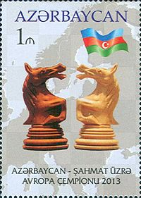

Azərbaycanda şahmat — intellektual idman növü tarixən geniş yayılmışdır.
Azərbaycan FİDE-nin üzvü olan 180-ə yaxın ölkə arasında şahmatın inkişaf etdirilməsi üzrə xüsusi Dövlət Proqramı qəbul etmiş yeganə dövlətdir[1].
Tarixi
Azərbaycanda da şahmatın böyük inkişaf yolu var. Daha qədim zamanlarda Azərbaycanda böyük şahmatçılar olmuşdur. Xaqani Şirvani (XI əsr), Nizami Gəncəvi (XII əsr), İmadəddin Nəsimi (XIV əsr), Məhəmməd Füzuli (XVI əsr) kimi dahilər öz şeirlərində şahmatı tərənnüm etmiş, oyun haqqında mənalı, çox dərin fikirlər söyləmişlər. Fransız yazıçısı Aleksandr Düma Azərbaycanda olarkən Xurşidbanu Natəvan ilə şahmat oynamış və onun qədim oyunun sirlərini dərindən bilməsini qeyd etmişdir. Görkəmli mütəfəkkir Mirzə Fətəli Axundzadə oğluna yazdığı məktubda şahmatın sirlərinə yiyələnməyi tövsiyə etmişdir. Qədim Orta Asiyada gözəl oyunu ilə hamını heyran edən Cəlaləddin Naxçıvani (IX əsr) və Xoca Əli Təbrizi Azərbaycan şahmatçılarının ilk görkəmli nümayəndəsidir.
Orta əsr təzkirələrində hər hansı bir dahi şəxsiyyətin poeziya, xəttatlıq, yaxud rəssamlıq sahəsində ustalığı qeyd olunarkən eyni zamanda onun şahmatçılıq bacarığından da danışılır. Görkəmli Azərbaycan miniatürçüsü və şairi Sadıq bəy Əfşarın "Məcmə-ül-xəvas" adlı təzkirəsində bildirilir ki, onun ustadı istedadlı rəssam Müzəffər Əli böyük və kiçik şahmat taxtalarında adi və gözübaqlı şəkildə ustalıqla oynayırmış. Tanınmış İran alimi Məhəmmədəli Tərbiyətin "Azərbaycanın görkəmli adamları" kitabında orta əsr təzkirələrindən götürülmüş bir neçə belə fakt gətirilir. XVI əsr şairi Əbdi Şirvaninin həyat tarixçəsində bildirilir ki, o, görkəmli söz ustası olsa da, şahmatda tez-tez məğlubiyyətə uğrayırmış. Lakin onun yaşıdı, görkəmli şair və alim Çələbi bəyin tərcümeyi-halında onun digər üstün cəhətləri ilə birlikdə yaxşı şahmat oynamaq bacarığı da xüsusi qeyd olunur.
1926-cı ildə Bakı, 1934-cü ildə isə ilk Azərbaycan çempionatı keçirilmişdir. Turnirin qalibi K. Səlimxanov olmuşdur. 50-ci illərin sonunda istedadlı şahmatçı S. Xəlilbəyli SSRİ idman ustası adına layiq görülmüş ilk azərbaycanlı şahmatçı olmuşdur. Otən əsrin 70-ci illərindən başlayaraq Azərbaycanda şahmata dövlət səviyyəsində xüsusi qayğı göstərilirdi. 60-a yaxın uşaq-gənclər şahmat məktəbi tikilib istifadəyə verildi. Bu da tezliklə bəhrəsini verdi. Azərbaycan dünya şahmatına Teymur Rəcəbov, Şəhriyar Məmmədyarov, Vüqar Həşimov və Emil Sutocskiy kimi şahmatçılar vermişdir.
Fikrət Sideifzadə, Elmar Məhərrəmov, Aydın Hüseynov, Aynur Sofiyeva, Firuzə Vəlixanlı, İlahə Qədimova, SSRİ miqyasında və beynəlxalq turnirlərdə bir-birinin ardınca qələbələr qazanmışlar. 1992-ci ildə qızlardan ibarət yığma komanda Filippinin paytaxtı Manila şəhərində Ümumdünya Şahmat Olimpiadasında ilk dəfə çıxış edərək 67 komanda arasında yüksək 7-ci yeri tuta bilmişlər. 1993-cü ildə isə Avropa komanda çempionatında (Debretsen, Macarıstan) həmin komanda bürünc medallara layiq görüldü. Son 14 ildə respublikada yeniyetmələrin dünya və Avropa çempionatlarında 70 medal qazanmışlar. 2002-ci ildə gənclər arasında Avropa çempionatı, Bakıda bir il sonra isə dünya çempionatı Naxçıvanda keçirildi. Bu çempionatlarda Azərbaycanı təmsil edən şahmatçılar — Zeynəb Məmmədyarova (bir qızıl, bir gümüş), Şəhriyar Məmmədyarov (bir bürünc, bir qızıl), Vüqar Həşimov (bir gümüş) beş medala layiq görülmüşlər. 2005-ci ildə Şəkidə, iki il sonra isə Bakıda dünyanın qüvvətli qadın şahmatçılarının iştirakı ilə beynəlxalq turnirlər keçirilmişdir. Bu təşkilatı uğurların nəzərə alaraq Beynəlxalq Şahmat Federasiyası Qran-Pri turnirlər silsiləsinin ilk mərhələsinin keçirilməsini 2008-ci ildə Bakıya həvalə etdi. Son illərdə Azərbaycan şahmatçıları Teymur Rəcəbov, Şəhriyar Məmmədyarov və Vüqar Həşimov dünyanın qabaqcıl şahmatçıları sırasına çıxa bilmişlər. 2007-ci ilin sonunda kişilər arasında seçmə komanda Yunanıstanın Krit adasında keçirilən Avropa çempionatında ilk dəfə Azərbaycana bürünc medallarla qayıtmışdır.
FİDE-nin siyahısında Azərbaycan şahmatçıları Teymur Rəcəbov, Şəhriyar Məmmədyarov və Vüqar Həşimov dünyanın ən güclü 20 şahmatçısı sırasında yer almışlar.